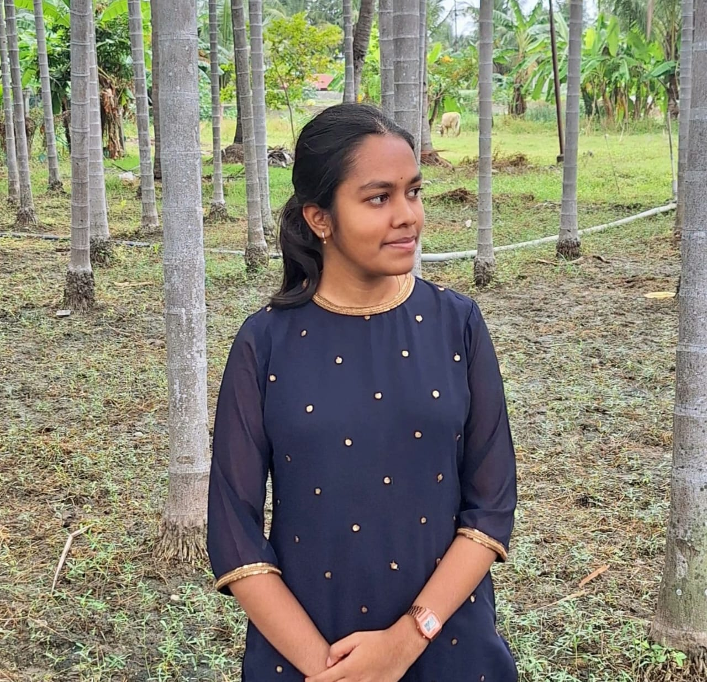

Student from Sri Krishna College of Engineering and Technology,
Coimbatore.
I'm a proactive ECE student with a strong foundation in electronics design, programming, and signal processing. Enthusiastic about leveraging technical skills in circuits, communication systems, and embedded technologies to contribute to innovative projects and professional growth. Driven by a keen interest in embedded systems and communication technologies.
I am eager to translate my technical expertise into practical solutions. Recognized for my analytical mindset and curiosity, I excel in working collaboratively and adapting to challenging environments.
this project involves designing a hospital management system using Java Database Connectivity (JDBC). The system integrates a user-friendly interface with a database to manage hospital operations such as patient records, doctor schedules, appointment bookings, and billing. It demonstrates efficient database connectivity, query execution, and data manipulation in Java, showcasing how technology streamlines administrative tasks in healthcare
Implant Training at Megawin SwitchGear Pvt. Ltd.
kavyaashok2005@gmail.com
9360605002